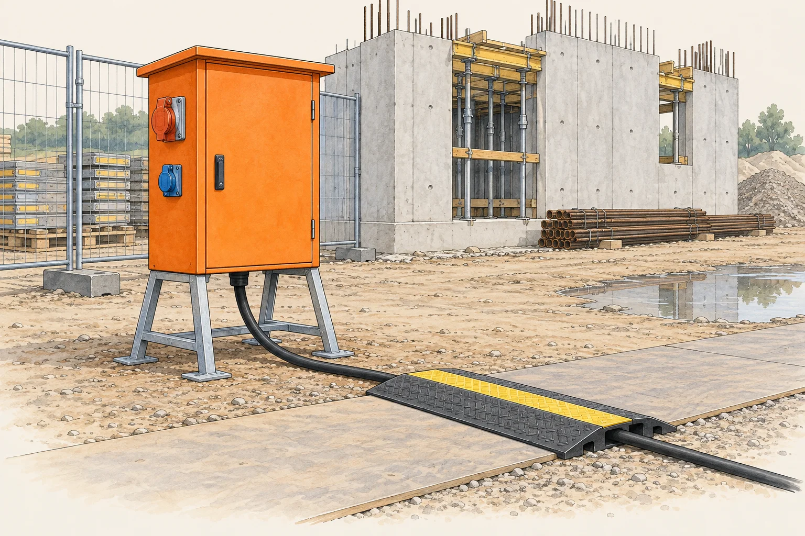

Vorschriften · FI-Schutz · IP-Schutz · Baustromverteiler · Prüfung Rules · RCD protection · IP protection · site distribution · testing

Die Baustelle ist die härteste Umgebung, in der eine elektrische Installation arbeiten muss. Alles, was in einer fertigen Anlage geschützt und fest ist, ist hier provisorisch, beweglich und im Weg.
A construction site is the harshest environment an electrical installation has to work in. Everything that is protected and fixed in a finished installation is here temporary, movable and in the way.
| ErschwernisAggravating factor | FolgeConsequence |
|---|---|
| Wetter, Nässe, Schlammweather, wet, mud | hohe Schutzart, erhöhte Gefährdunghigh IP rating, increased risk |
| Kabel am Boden, befahren und geknicktcables on the ground, driven over and kinked | robuste Leitungstypen, FI-Schutzrobust cable types, RCD protection |
| Ständige Veränderungconstant change | Anlage wird laufend umgebaut, häufige Prüfung nötigthe installation is continually altered, frequent testing required |
| Viele Gewerke, wechselnde Personenmany trades, changing people | nicht alle sind Elektrofachleute — Bedienung muss robust seinnot all are electricians — operation must be foolproof |
| Leitfähige Umgebungconductive surroundings | Armierung, Gerüst, feuchter Beton — guter Weg zur Erdereinforcement, scaffolding, damp concrete — a good path to earth |
Feuchter Beton und berührbare Metallteile können den Kontakt zur Erde begünstigen. RCD-Schutz ist deshalb wichtig, wirkt aber nur zusammen mit intakten Geräten, Schutzleitern, geeigneter Leitungsführung und regelmässiger Prüfung. Er erlaubt keinen Weiterbetrieb beschädigter Betriebsmittel.
Wet concrete and accessible metalwork can increase contact with earth. RCD protection is important but depends on sound equipment, protective conductors, suitable cable routing and regular checks. It does not permit continued use of damaged equipment.
Die Baustelle wird über eine Baustromverteilung gespeist — ein transportables, robustes Gehäuse, das alle Schutzeinrichtungen und Steckvorrichtungen enthält.
A site is supplied through a site distribution assembly — a transportable, robust enclosure containing all protective devices and socket outlets.
Der Anschluss der Baustromverteilung an das Netz und die Anmeldung des Bauprovisoriums sind Sache der berechtigten Fachperson. Die Anlage wird vor der Inbetriebnahme geprüft und dokumentiert. Als Lernender arbeitet man daran im Auftrag und unter Aufsicht.
Connecting the site supply to the network and registering the temporary installation are matters for the authorised qualified person. The installation is tested and documented before being put into service. As an apprentice you work on it when instructed and supervised.
Baustromverteiler: Steckdosen ≤ 32 A mit RCD ≤ 30 mA; Steckdosen > 32 A mit RCD ≤ 300 mA. Die Umrüstfristen für bestehende Verteiler endeten spätestens Ende 2023. Quelle: Electrosuisse-Fachbeitrag beim Baumeisterverband.
Site distribution boards: sockets ≤ 32 A with RCD ≤ 30 mA; sockets > 32 A with RCD ≤ 300 mA. Retrofit deadlines for existing boards ended by the end of 2023. Source: Electrosuisse article published by the Swiss Contractors’ Association.
| MassnahmeMeasure | AnwendungApplication |
|---|---|
| FI 30 mA | alle Steckdosenstromkreise für Handgeräte und Kleinmaschinenall socket circuits for hand tools and small machines |
| Schutzkleinspannung SELVExtra-low voltage SELV | Handleuchten und Werkzeuge in engen, leitfähigen Räumen — Behälter, Kessel, Schachthand lamps and tools in confined conductive spaces — tanks, boilers, shafts |
| SchutztrennungElectrical separation | Trenntransformator für einen einzelnen Verbraucherisolating transformer for a single load |
| PotentialausgleichBonding | Gerüst, Kran, Armierung und leitfähige Bauteile einbezieheninclude scaffolding, cranes, reinforcement and conductive building parts |
Bei leitfähigen Bereichen mit begrenzter Bewegungsfreiheit sind die zulässigen Schutzmassnahmen für das jeweilige Betriebsmittel gesondert zu bestimmen: etwa SELV oder Schutztrennung mit einem Verbraucher. Ein RCD allein reicht hier nicht. Speisequellen, Aufsicht und Rettung sind nach Einsatzbedingungen zu planen.
For conducting locations with restricted movement, determine the permitted protective measures for each item, such as SELV or electrical separation for one load. An RCD alone is insufficient. Plan supply sources, supervision and rescue for the working conditions.
Auf Baustellen sind für die Beanspruchung geeignete robuste Leitungen einzusetzen, beispielsweise H07RN-F bei passender Herstellerfreigabe. Auch solche Leitungen sind nicht automatisch überfahrfest. Fahrzeuglasten, scharfe Kanten und Zugkräfte müssen durch Verlegung und mechanischen Schutz beherrscht werden.
Construction sites require robust cables suitable for the exposure, such as H07RN-F where approved. These are not automatically vehicle-proof. Route and protect them against vehicle loads, sharp edges and tensile forces.
| TypType | EignungSuitability |
|---|---|
| H07RN-F | schwere Gummischlauchleitung — der Standard auf der Baustelleheavy rubber flexible cable — the site standard |
| H05VV-F | leichte PVC-Schlauchleitung — nicht für die Baustellelight PVC flexible cord — not for site use |
Die Stromwärmeverluste entstehen durch den Leiterwiderstand: P = I² · R. Auf der Trommel wird diese Wärme schlechter abgeführt. Hin- und Rückleiter liegen im selben Kabel; eine starke zusätzliche Spulenwirkung erklärt die Überhitzung nicht. Herstellerangaben zur Belastbarkeit auf- und abgerollt beachten und für hohe Last vollständig abrollen.
Resistive losses produce heat: P = I² · R. A wound reel dissipates this heat poorly. Outgoing and returning conductors share the cable; a strong additional coil effect does not explain the overheating. Observe the wound and unwound load ratings and fully unwind for high loads.
Weil die Anlage laufend verändert und stark beansprucht wird, gelten auf der Baustelle kürzere Prüfintervalle als in einer festen Installation. Geprüft wird vor der ersten Inbetriebnahme und danach wiederkehrend.
Because the installation is continually altered and heavily stressed, shorter test intervals apply on site than in a fixed installation. Testing is done before first use and repeated at intervals.
Vor jedem Einsatz Sichtkontrolle durchführen: Mantel, Stecker, Zugentlastung, Deckel und Aufstellort prüfen. Beschädigte Geräte ausser Betrieb nehmen und gegen Weiterbenutzung sichern. Eine Sichtkontrolle erkennt nicht jeden elektrischen Fehler und ersetzt die vorgesehenen Messungen nicht.
Before each use, visually check the sheath, plug, strain relief, covers and location. Remove damaged equipment from service and prevent further use. Visual checks cannot detect every electrical fault and do not replace required measurements.
Ein Bauprovisorium ist eine vollwertige elektrische Installation auf Zeit. Es unterliegt der Melde- und Kontrollpflicht, muss vor der Inbetriebnahme geprüft und dokumentiert werden und ist nach Abschluss der Arbeiten wieder ordnungsgemäss zurückzubauen. «Provisorisch» heisst nicht «weniger streng» — es heisst nur «zeitlich begrenzt».
A temporary site installation is a full electrical installation with a time limit. It is subject to notification and inspection duties, must be tested and documented before use, and must be properly dismantled when the work is finished. “Temporary” does not mean “less strict” — it only means “limited in time”.
Die verbindlichen Anforderungen für Baustellen stehen in der NIN in einem eigenen Kapitel, ergänzt durch die NIV für Melde- und Kontrollpflichten sowie die Suva-Unterlagen zur Baustellensicherheit. Die Prüfintervalle, Grenzwerte für den FI-Schutz und die Anforderungen an Steckvorrichtungen vor der Abgabe dort nachschlagen und die Artikel zitieren.
The binding requirements for construction sites are set out in a dedicated NIN chapter, supplemented by the NIV for notification and inspection duties and the Suva material on site safety. Look up the test intervals, RCD limits and requirements for socket outlets there before submitting and cite the articles.
Weil man auf feuchtem Beton steht, Armierung und Gerüst berührt und Handwerkzeuge benutzt, deren Zuleitungen stark beansprucht werden. Der Körper ist dadurch sehr gut mit der Erde verbunden, und schon eine kleine Berührungsspannung treibt einen gefährlichen Strom.
Because you stand on damp concrete, touch reinforcement and scaffolding and use power tools whose leads take heavy punishment. The body is therefore very well connected to earth, and even a small touch voltage drives a dangerous current.
Bei Baustromverteilern gilt für Steckdosen bis einschliesslich 32 A RCD ≤ 30 mA, für Steckdosen über 32 A RCD ≤ 300 mA. Stromform und Gerätevorgaben bestimmen zusätzlich den erforderlichen Typ. Die höhere Stufe bietet keinen zusätzlichen Schutz wie ein 30-mA-RCD.
For site distribution boards, sockets up to and including 32 A require RCD ≤ 30 mA; sockets above 32 A require RCD ≤ 300 mA. Waveforms and equipment instructions also determine the required type. The higher rating does not provide the additional protection of a 30 mA RCD.
Eine für Baustellenbeanspruchung zugelassene Leitung, beispielsweise H07RN-F. Herstellerfreigabe und Einsatzbedingungen beachten. Gegen Überfahren ist zusätzlicher mechanischer Schutz nötig; eine leichte Haushaltsverlängerung ist kein Ersatz.
Use cable approved for construction-site service, for example H07RN-F. Observe manufacturer approval and operating conditions. Vehicle crossings require additional mechanical protection; a light domestic extension is no substitute.
Aufgerollt staut sich die durch den Leiterwiderstand erzeugte Wärme. Die geringere zulässige Last im aufgerollten Zustand steht auf dem Gerät. Für hohe Last vollständig abrollen; der thermische Schutz ist keine Erlaubnis zur Überlastung.
When wound, heat generated by conductor resistance accumulates. The lower permitted wound load is marked on the device. Fully unwind for high loads; thermal protection is not permission to overload.
Für leitfähige Bereiche mit begrenzter Bewegungsfreiheit sind besondere Schutzmassnahmen zu wählen: etwa SELV oder, soweit für den Verbraucher zulässig, Schutztrennung mit einem einzelnen Verbraucher. Handleuchten und andere Betriebsmittel sind gesondert zu beurteilen. Speisequelle und Rettungsorganisation sind nach den konkreten Anforderungen anzuordnen; ein gewöhnlicher RCD allein reicht nicht.
Conducting locations with restricted movement require special protective measures, such as SELV or, where permitted for the load, electrical separation supplying one item. Assess hand lamps and other equipment separately. Arrange the supply source and rescue provisions to meet the specific requirements; an ordinary RCD alone is insufficient.
Gerüst, Kran, Armierung und andere grossflächige leitfähige Bauteile. Sie können sonst ein fremdes Potential einschleppen oder im Fehlerfall Spannung führen.
Scaffolding, cranes, reinforcement and other large conductive building elements. Otherwise they can import an external potential or become live under fault conditions.
Weil die Anlage laufend umgebaut und stark mechanisch beansprucht wird. Was gestern geprüft war, kann heute beschädigt sein. Dazu kommt die tägliche Sichtkontrolle vor jedem Einsatz eines Gerätes.
Because the installation is continually altered and heavily stressed mechanically. What was tested yesterday can be damaged today. On top of that comes the daily visual check before every use of a tool.
Nein. Ein Bauprovisorium ist eine vollwertige elektrische Installation, nur zeitlich begrenzt. Es unterliegt der Melde- und Kontrollpflicht, wird vor der Inbetriebnahme geprüft und dokumentiert und nach Abschluss ordnungsgemäss zurückgebaut.
No. A temporary site installation is a full electrical installation, merely limited in time. It is subject to notification and inspection duties, is tested and documented before use, and is properly dismantled afterwards.